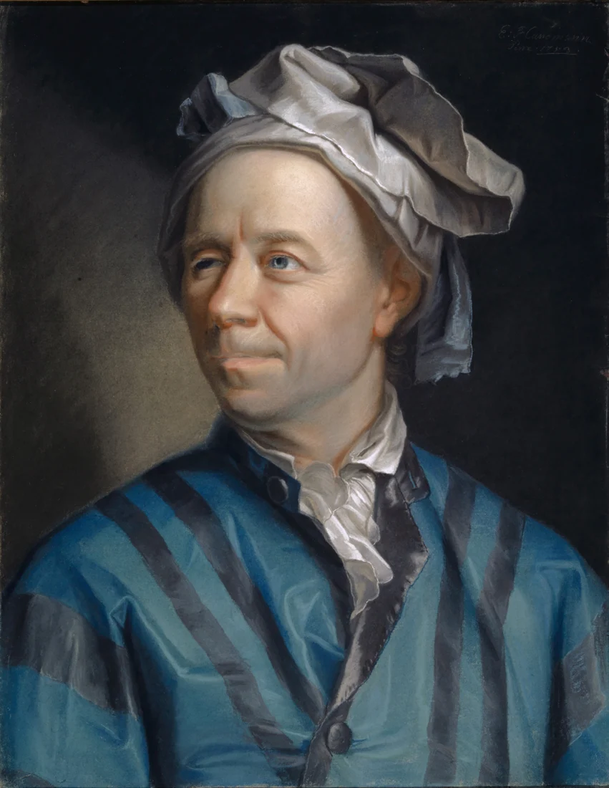
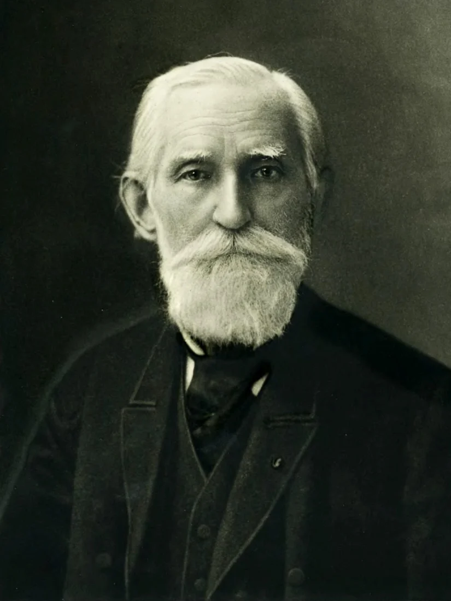
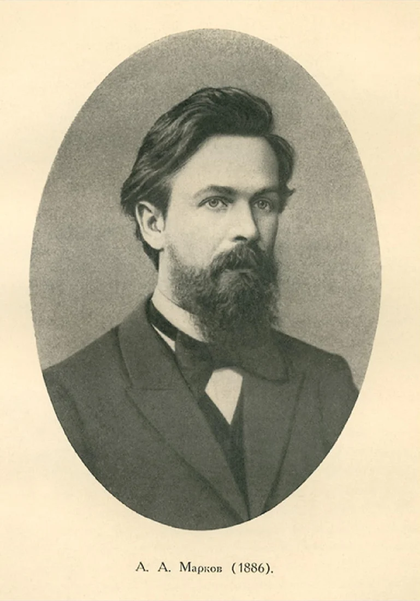
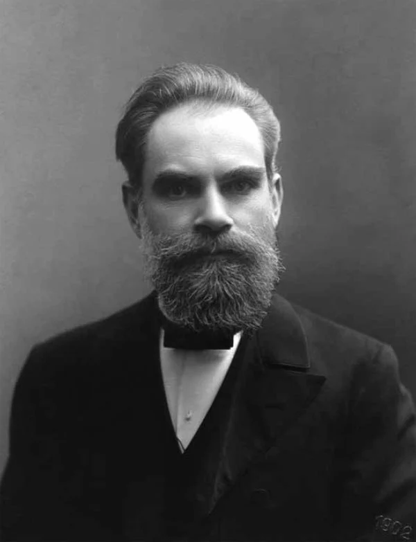
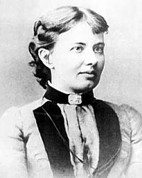
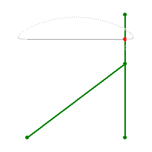
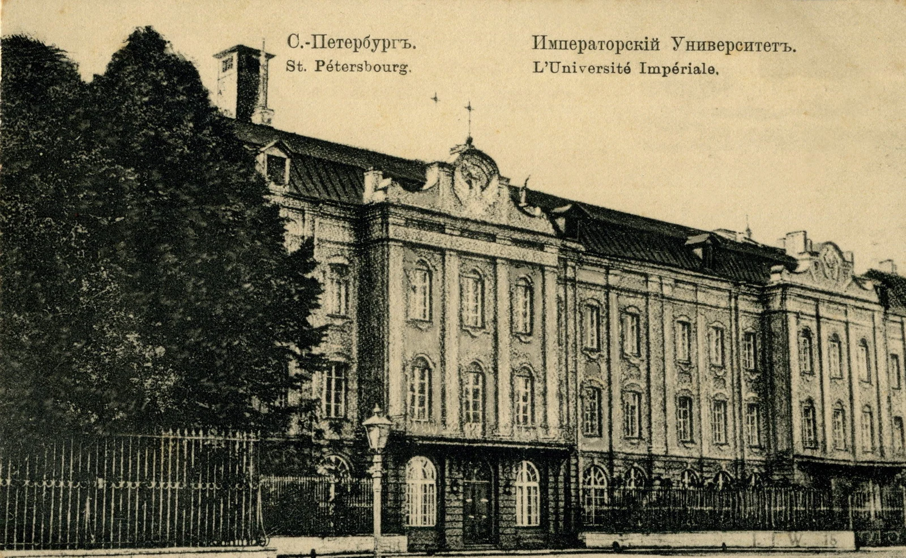

Кунсткамера + Академия
Университетская наб., 3 и 5
Среда → наставник → ЭйлерМатематический Петербург · из уст в уста





Кто помог человеку сделать больше?
Немного ходьбы, много связей
Университетская наб., 3 и 5
Среда → наставник → ЭйлерУниверситетская наб., 7–9
Чебышёв → ученики · КовалевскаяНаб. Лейтенанта Шмидта, 1
Разные поколения → продолжение идейСхема порядка, не карта. Дом Эйлера и 6-я линия, 17 — необязательное продолжение.
Проверяем три даты
Учреждение Академии
Приезд Эйлера
Нынешнее здание
«В этом здании молодой Эйлер работал в 1727 году»
Деятельность Академии начинается в 1725-м. Кунсткамера основана в 1714-м.
Иоганн Бернулли → Леонард Эйлер
«…читать более трудные математические книги самостоятельно…»
Эйлер о совете Иоганна Бернулли. Наш перевод фрагмента английской передачи в MacTutor.
Эйлер и люди рядом с ним
Сформулировать мысль
Сохранить и уточнить
Передать читателю
Какой вопрос поможет восстановить рисунок?
Учебный рисунок. В рассказе Фусса портной, записывавший алгебру, и сам Фусс — разные люди.
От города к устройству сети
Пять выбранных мостов; перемещения внутри зон не учитываем. Схема не является навигационной картой.
Пафнутий Чебышёв · приближённое прямило

Сегодня: приводы, механизмы, проектирование движений.
Современная схема, Van helsing, 2007 · CC BY 2.5. Близость к прямой — на части траектории.
Чебышёв → Ляпунов → Крылов

«…со всеми тонкостями попутных замечаний…»
Оценка Алексея Николаевича Крылова, фрагмент в карточке переиздания URSS. Рукопись не сверялась.
Одна школа — разные направления
Вопросы · методы · научная среда
Зависимые случайные события
Устойчивость движения
Что сохраняется, когда задачи становятся разными?
Андрей Марков · учебная модель прогноза
Среднее 9,5 мин
Риск опоздания 30%
Среднее 11 мин
Риск опоздания 0%
До встречи 12 минут. Какой путь выбрать?
Учебные вероятности и полные времена пути. Описываем модель, а не устройство конкретного навигатора.
Литература встречается с вероятностью
Мой дядя самых честных правил,
Когда не в шутку занемог,
Он уважать себя заставил
И лучше выдумать не мог.
А. С. Пушкин, «Евгений Онегин», начало романа; современная орфография. Наш короткий учебный отрывок.
Гласная после гласной
Гласная после согласной
Гласные подчёркнуты; согласные без подчёркивания. Ь и Ъ исключены из расчёта, как отдельные знаки.
Современная связь: условная вероятность и роль контекста в предсказании текста.
Александр Ляпунов · вопрос об устойчивости
Остаться рядом и вернуться — одно и то же?
Школьная схема видов равновесия: меняем положение без начальной скорости. Это не симуляция всей теории устойчивости движения.
Софья Ковалевская · разговор, после которого появляется смысл
Детский эпизод — Полибино. Частные занятия — Страннолюбский; позднее научное наставничество — Вейерштрасс.
s = t² → v = 2t = 4
Современная учебная схема: путь в условных единицах, время в секундах. Производная — школьный вход, не изобретение Ковалевской.
Ковалевская · тяжёлое тело вокруг неподвижной точки
Учебное время до падения
Скорость не измерена.
Числа учебные. Схематический волчок — вход в задачу о вращении, а не модель специального случая Ковалевской.
Дом академиков · память о разных поколениях
Математика и механика
Вероятности, приближения, механизмы
Зависимые случайные величины
Устойчивость движения
Биография человека
Связь с конкретным домом
С домом связаны разные поколения. Совместные встречи всех названных людей не подтверждены.
Научная школа продолжается в следующем вопросе
Место, время, книги и приборы
Собеседник для трудного вопроса
Работа до готового ответа
Речь, запись, проверка понимания
Право идти дальше учителя
Объясните одну идею человеку, которого здесь не было.